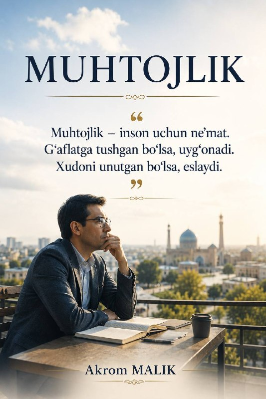

Ushbu matn tamagirlikni o‘ziga kasb qilgan kaslar haqida emas, iffatli va sharafli…

Ushbu matn tamagirlikni o‘ziga kasb qilgan kaslar haqida emas, iffatli va sharafli, insofli va diyonatli odamlarning muhtojlik domiga tushib qolishlari haqidadir.
Muhtojlik – inson uchun ne’mat. G‘aflatga tushgan bo‘lsa, uyg‘onadi. Xudoni unutgan bo‘lsa, eslaydi. Ko‘plab musibatlar qatorida muhtojlik shunday yaxshi sifatlarga ega. Bundan tashqari muhtojlik nafsingni egadi – u seni boshqalar eshigi tagida yordam so‘rattirib, yuzingni sarg‘aytiradi.
Muhtoj odamning qalbi titrab, chorasiz ahvolga tushadi. Shu payt uning nidosiga – yordam so‘rab aytgan so‘ziga labbay degan insonning darajasi qanchalik yuksalmog‘ini bila olasizmi?
Bir inson aytadi: “Og‘ir ahvolga tushib qoldim. Odamlarga foydang tegsa, keraksan. Xoh ilm, xoh mablag‘ bo‘lsin – foydang tegsa, inson qatorida sanalasan. Birma-bir do‘stlar eshigini taqillatdim. Tabiiy, imkoni borlarga murojaat etdim. Shunda bir do‘stim falon qismini beraman dedi. Qanday ta’sirlanganimni ayta olmayman. Hech bir so‘z va izohsiz aytdi. Eslasam, u doim shunday bo‘lgan”.
Muhtojlikda inson bir tarafdan sha’nini saqlashi kerak bo‘lsa, bir tarafdan zarurat o‘rnini qoplashi lozim. Ikki tarafdan ikkita qilich seni chopishga shay – qayoqqa qochsang ham, biri seni chopadi – pul so‘rasang, boshing egiladi; so‘ramasang, zarurat seni qistovga oladi.
Shu jarayon do‘stlarni saralash jarayonidir. Do‘sting senga og‘irlik tushirmay, sen uchun mashaqqatni ko‘taradi va seni avaylaydi. Ikkiyuzlamachi esa sening muhtojligingni bila turib, senga yetishmovchilik haqida eslatib, o‘z azobingni o‘zing tort deydi, bunday odamlar do‘st emas, holbuki oddiy insoniylik ham boshqa odamga shafqat qilishni taqozo etadi.
Muhtoj bo‘lmaslik uchun hech kimdan qarz olmaslik kerak. Muhtoj bo‘lmaslik uchun moliyaviy quvvating yetmaydigan ishlarga qo‘l urmaslik shart. Muhtoj bo‘lmaslik uchun ishlash va topgan pulingni o‘z o‘rniga sarflashing talab etiladi. Keraksiz narsalar sotib olgan odam muhtojlikka tushadi.
Qo‘lingda puling bo‘lmasa, kimdandir pul olib, sherikchilik shartlarini chala qilib, ish boshlaysan va ishing yurishmay qolsa, oqibatda, chala sherik bilan muammoga giriftor bo‘lasan.
Senga o‘ta-o‘ta shart bo‘lmagan narsani sotib olish uchun kredit yoki boshqa turdagi qarz olsang, har oyda sening qoningni so‘rib tashlaydi.
Boylikni Xudo beradi, mabodo qo‘lingda katta miqdorda boylik aylanib tursa, sendan so‘rashlarini kutma – muhtojlarni o‘zing izlab top, yordam ber, oh-oh, bu ishning qanday barakasi bo‘lishini tasavvur ham qila olmaysan.
Akrom MALIK